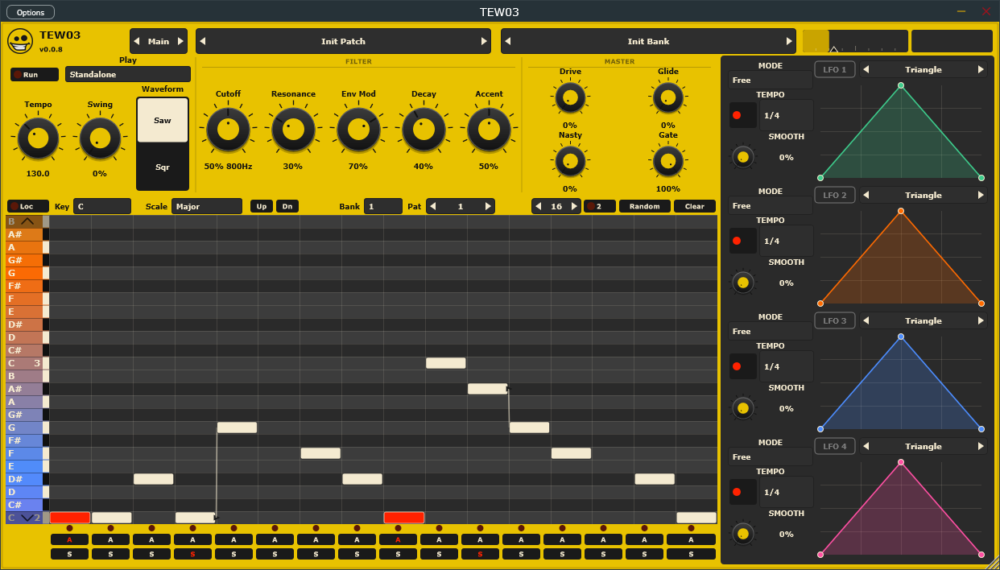
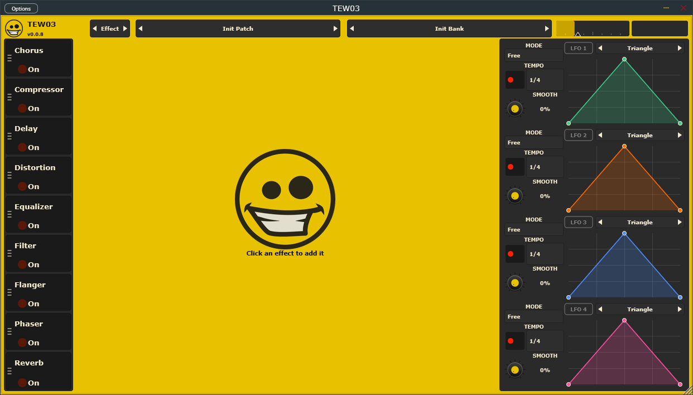
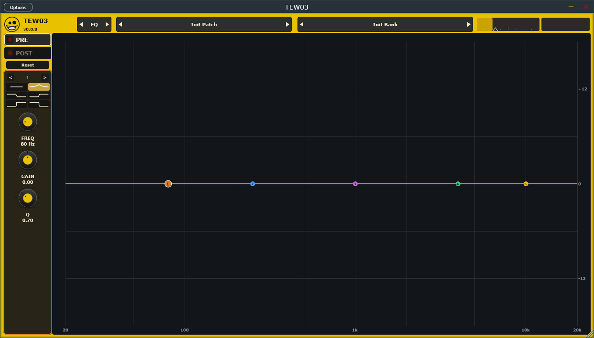

TEW03
Everybody Needs a 303
You wanted a 303 that still bites, and a sequencer that actually lives in the plugin. TEW03 is a one-voice acid synth: saw or square, a resonant diode ladder, accent, slide, drive, and a Nasty knob for extra grit after the filter.
It is part of Stupid Audio — six free instruments. The rest of the pack lives over there.
Main
This is the instrument: the voice, a 3×12 step sequencer, and four drawn LFOs you can drop on any knob. Sixteen steps, or thirty-two if you hit 2x. Accent and slide per step. Key lock if you want it in scale. Patterns play the voice and go out as MIDI, so you can record the line in the DAW or drive something else.
LFO 1 LFO 2 LFO 3 LFO 4
- Keyboard — play it from MIDI. The sequencer can still clock for MIDI out.
- Standalone — loop the selected slot. Hidden from the Play list in a DAW.
- Pattern — hold a key to trigger a pattern.

Effects
Chorus, compressor, delay, distortion, EQ, filter, flanger, phaser, reverb. Click to add one, drag to reorder the chain. Everything starts off, so you are not fighting a surprise wash of reverb on a dry acid line.

EQ
Five-band parametric before the effects and another five after. The spectrum sits behind the curve so you can see what is leaving the chain while you nudge a band.
